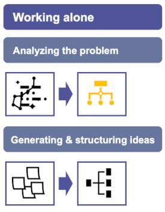
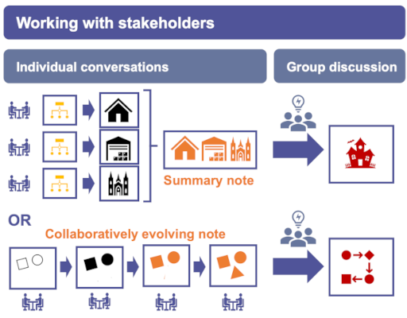

The power of diagramming: clarity and better decisions
Diagramming is a simple technique I find very useful: summarising, analysing and conveying information and ideas in simple diagrams. These diagrams are not mindmaps but collections of shapes and words. Diagramming is an approach that can help you see clarity and can help the stakeholders you're working with see clarity – and ultimately make better decisions.
I usually start with some freestyle scribbles on paper but tend to move quickly to a simple drawing software tool (I use PowerPoint). I start from a blank canvas.
Uses of diagramming
You can use diagramming in two ways: when spending quiet thinking time analysing a problem and when you are engaging with stakeholders.
One: When working on a knotty problem on your own
Diagramming can help tremendously to get a handle on a complex problem or situation: to structure it into its components, to draw out causes and influencing factors, to capture relationships between factors. This phase is crucial and it’s worth spending time making iterations of the diagram until you are sure you have analysed the problem or situation thoroughly and have a clear diagram (or set of diagrams).
Once you see the problem clearly, diagramming can help you to systematically capture and structure your ideas to overcome the challenge.

© 2022 Catherine Brys - Brys Strategic Consulting
Two: When working with stakeholders
Diagramming is also particularly useful when you are engaging with stakeholders, be it one-to-one or in a group meeting. There are a couple of different ways you can go about it.
- Your own diagram as starting point or a blank canvas. If you have analysed the problem on your own first using diagramming, your diagrams can be an excellent starting point for discussions. Or you can start from a blank sheet and capture what emerges from the stakeholder conversations diagrammatically.
- Summary of individual conversations or evolving note. When you have completed a series of individual stakeholder conversations you can summarise the key points into a single diagram. Or you can build up a diagram as you are having discussions, adding to and annotating it with input from each stakeholder – in this case the diagram is an evolving collaborative note. Or you can use a combination of both
- As a tool in group meetings. The diagrams from individual conversations can be the starting point for a group discussion. It is a time-efficient way of sharing every stakeholder's contribution. Live diagramming during the group meeting – though a bit more tricky – can help to make sure everyone stays focused on the issues at hand.

© 2022 Catherine Brys - Brys Strategic Consulting
Benefits of diagramming
There are two main benefits of diagramming:
- Structure becomes clear. It’s amazing how diagramming can help you to analyse a problem and get insights into its complexities in a relatively short period of time. I actually find that as long as my diagram is quite messy, it’s usually an indication that I have not thought the problem through sufficiently. So I rethink and refine until clarity emerges.
- The diagram serves as a focal point during discussions. This type of diagram really helps to focus minds during group meetings or workshops: it’s a concise and visual reminder of the problem and people’s views/ideas. It is also a useful record to refer to during subsequent discussions so that the focus continues and momentum is kept up.